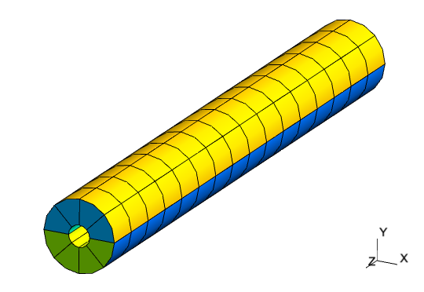
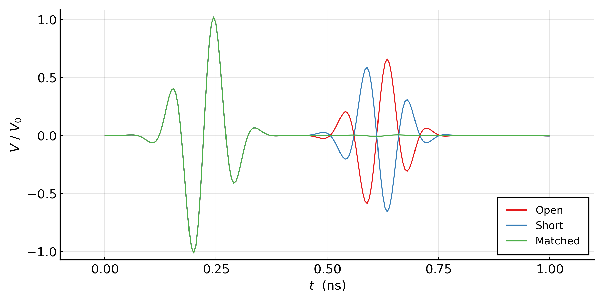
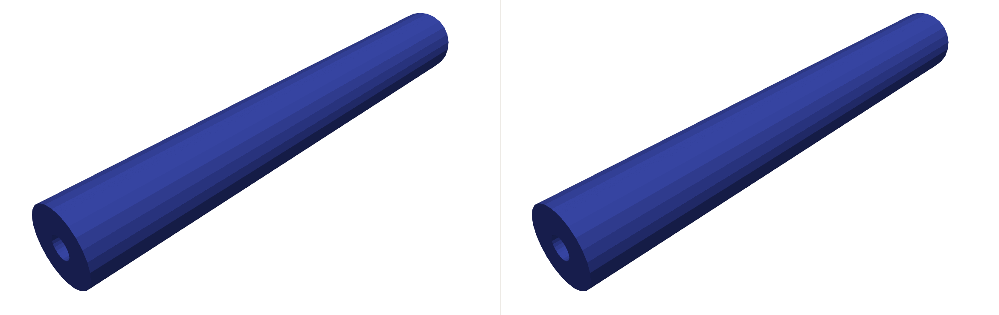
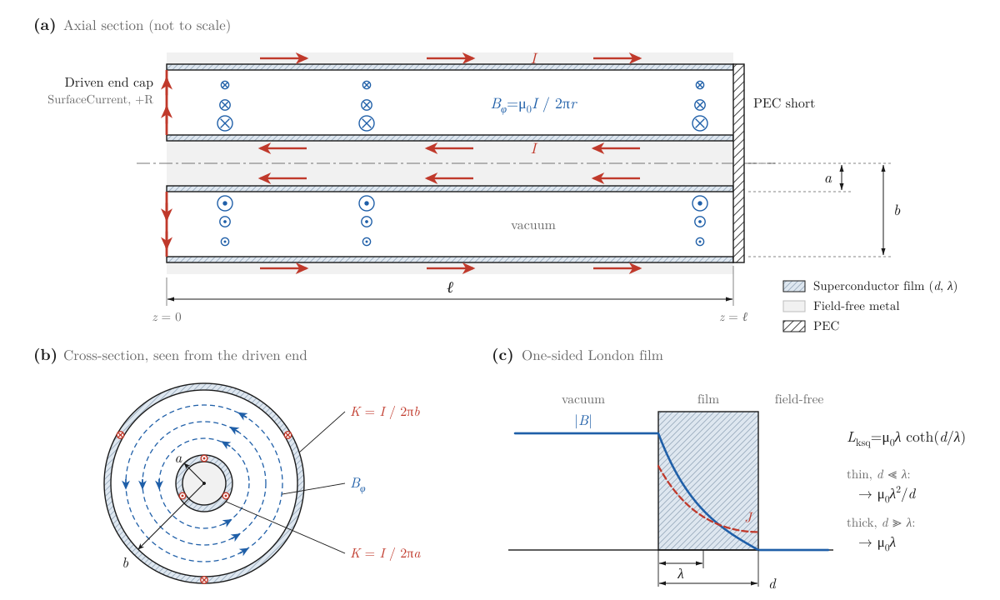
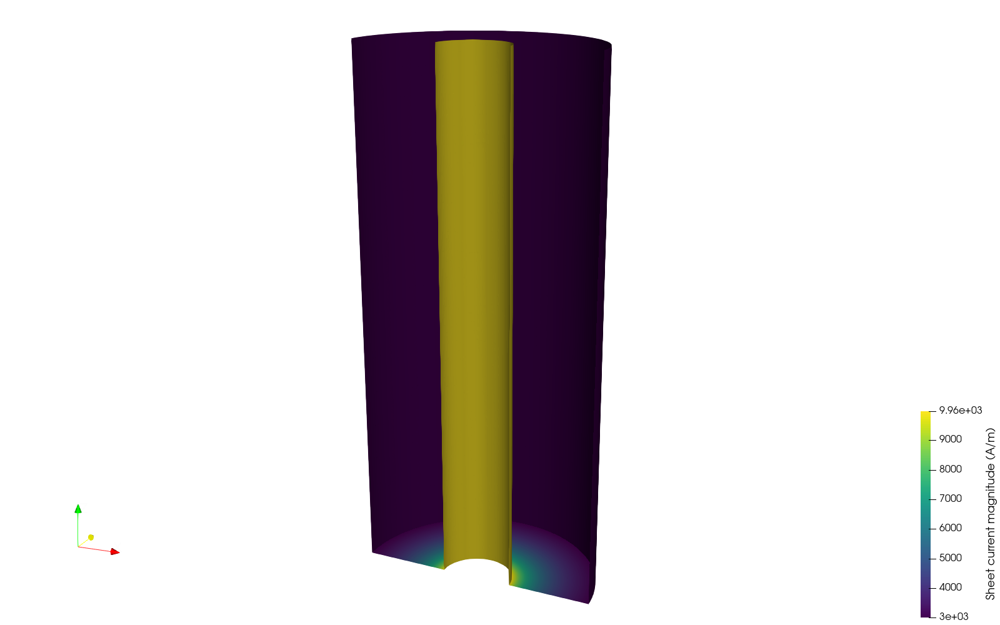
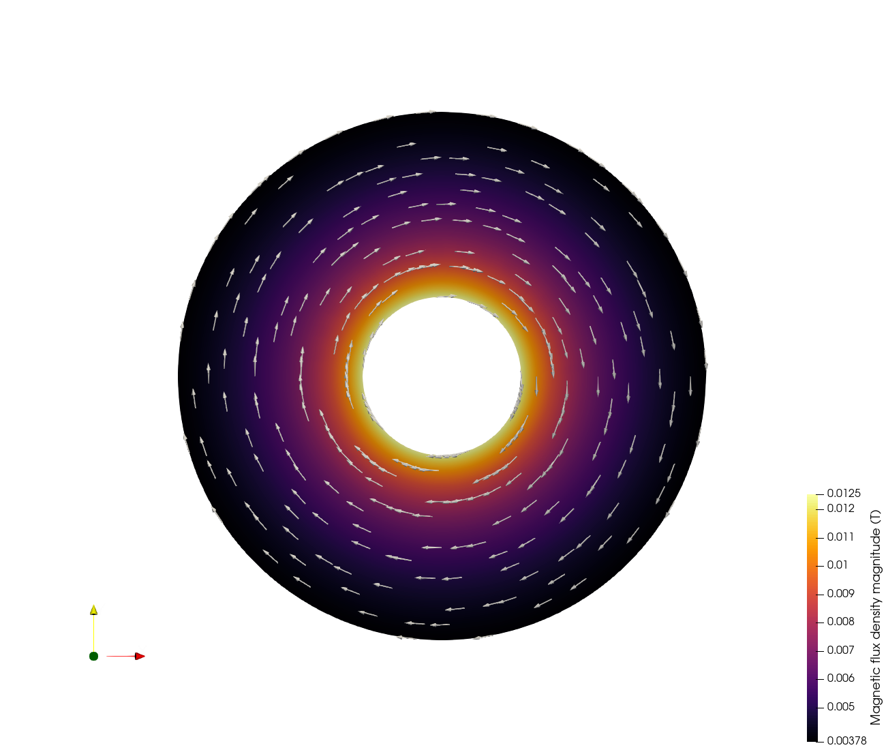
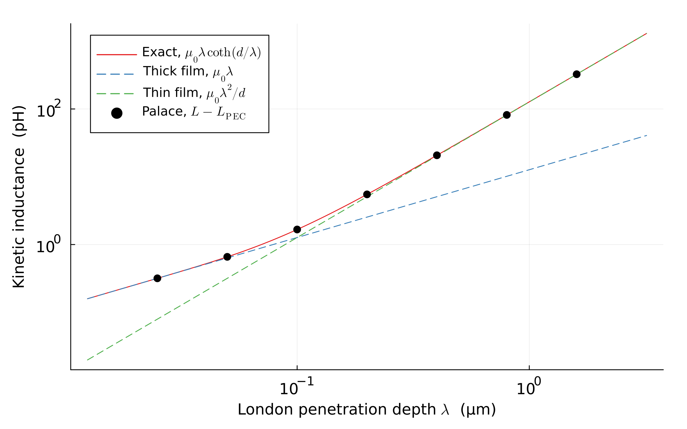

Signal Propagation in a Coaxial Cable
The files for this example can be found in the examples/coaxial/ directory of the Palace source code.
Palace can perform transient electromagnetic modeling, acting as a so-called finite element time domain (FETD) solver. To demonstrate this feature, we consider here the propagation of an electromagnetic pulse through a section of coaxial cable. The model is constructed based on a $50\text{ }\Omega$ RG-401/U coaxial cable [1], with outer and inner conductor diameters of $0.215\text{ in}$ and $0.0645\text{ in}$, respectively. The section length is roughly $1.5\text{ in}$. The Teflon dielectric material has $\varepsilon_r = 2.08$, and we consider $\tan\delta = 4\times 10^{-2}$, a factor of $100$ above the actual value in order to exaggerate losses in the transmission line.
In this example we consider three different configurations of the model, all with a coaxial lumped port excitation at one end of the line: an open termination at the opposite end (coaxial_open.json), a shorted termination (coaxial_short.json), and a matched $50\text{ }\Omega$ lumped port termination (coaxial_matched.json).
The mesh is generated using the Julia code in mesh/mesh.jl and consists of quadratically-curved hexahedral elements, as depicted below. Third-order shape functions are used to approximate the solution.

Each configuration file sets the simulation "Type" to "Transient". The different termination configurations are specified by using a "LumpedPort" with matched impedance for the matched termination, a "PEC" boundary for the shorted termination, leaving no boundary condition specified for the open termination. This last case applies the natural boundary condition for the finite element formulation which is a perfect magnetic conductor boundary condition, enforcing zero tangential magnetic field and thus zero surface current density.
The excitation pulse is configured under config["Solver"]["Transient"]. Here, we use a modulated Gaussian pulse shape, with time dependence given by the expression
\[g(t) = \sin{\left[\omega(t-t_0)\right]} e^{-\frac{(t-t_0)^2}{2\tau^2}} \,.\]
For this simulation, we use a center frequency $f = \omega/2\pi = 10\text{ GHz}$ and pulse width $\tau = 0.05\text{ ns}$. The offset $t_0$ is automatically chosen by Palace in order to smoothly ramp up the excitation from the rest initial condition. Time integration uses the second-order implicit Generalized-$\alpha$ scheme with a uniform time step $\Delta t = 5\times 10^{-3}\text{ ns}$, and the solution is computed for the interval $t\in[0.0,1.0]\text{ ns}$. The electric and magnetic field solutions are sampled every $10$ time steps for visualization.
Below, we plot the time histories of the port voltage at the excited coaxial lumped port for the three simulation cases.

We can observe that as expected, the matched termination absorbs the incident waveform nearly perfectly, while it is reflected with the same polarity for the shorted termination and opposite polarity for the open termination (phase shifted by $\pi$). Furthermore, the reflected wave is noticeably attenuated due to the material loss of the transmission line dielectric.
Lastly, an animation of the signal propagation for the matched (left) and shorted (right) simulations, constructed using the saved fields, is shown below.

Mixing lumped and wave ports
The same coaxial geometry is also used to demonstrate frequency-domain S-parameter computation when one end is terminated with a lumped port and the other with a wave port in a single driven simulation (coaxial_lumped_wave.json). The configuration sets "Type": "Driven", places a $100\text{ }\Omega$ lumped port at $z = 0$ (Index $1$, mismatched against the line's $\sim 50\text{ }\Omega$ characteristic impedance to give nontrivial reflection) and a wave port at $z = L = 40 \text{ mm}$ (Index $2$). The wave port uses a "VoltagePath" from the inner conductor (signal) to the outer conductor (ground) at the port face, matching the +R direction of the lumped port. This serves two purposes: it enables $Z_{PV}$ postprocessing (written to port-Z.csv) and it fixes the wave-port mode polarity so that cross-type S-parameters ($S_{12}$, $S_{21}$) have consistent signs with the lumped-port reference. See the wave port configuration documentation for details on "VoltagePath".
|S{22}| \approx -9.5\text{ dB}$, with$S{21} = S_{12}`` to within the level of attenuation set by the dielectric loss.
Kinetic inductance of a superconducting coaxial line
The same mesh also serves as a validation case for the magnetostatic solver with superconducting boundaries, because a shorted coaxial line has an exact inductance: there are no edges, so no fringing fields and no current crowding, and the field is confined between the conductors. Setting "L0": 1.0e-6 in the "Model" block reads the mesh in micrometers, turning the cable into a micro-coax with inner radius $a = 0.819\,\mu\text{m}$, outer radius $b = 2.731\,\mu\text{m}$, and length $\ell = 40\,\mu\text{m}$. At this scale the kinetic inductance of a thin superconducting film is comparable to the geometric inductance of the line.
Two configurations are provided, both with "Type": "Magnetostatic":
coaxial_magnetostatic_pec.jsontreats the inner and outer conductors as"PEC".coaxial_magnetostatic_superconductor.jsondeclares them as a"Superconductor"with penetration depth $\lambda = 0.4\,\mu\text{m}$ and thickness $d = 0.1\,\mu\text{m}$ ("PenetrationDepth"and"Thickness", in mesh length units).
In both, the far end of the line ($z = \ell$) is a "PEC" short, and the near end cap is a "SurfaceCurrent" with "Direction": "+R", which drives a unit radial current from the inner to the outer conductor across the annulus. The current returns along the conductors and through the short, so the driven end cap itself closes the circuit and no feed gap is needed. The inductance is extracted from the magnetic energy and written to terminal-M.csv.

With total current $I$ on each conductor, the magnetic field between them is $B_\phi = \mu_0 I / 2\pi r$, and the conductors carry uniform sheet currents $K = I / 2\pi a$ and $I / 2\pi b$ (panels (a) and (b) above). Each film sees field on one side only: inside the film the field decays as $\sinh\left((d - x)/\lambda\right)$ and the current density as $\cosh\left((d - x)/\lambda\right)$, where $x$ is the depth into the film, so the field vanishes at the back face but the current does not (panel (c)). Such a film has the finite-thickness London sheet inductance $L_{\mathrm{ksq}} = \mu_0 \lambda \coth(d/\lambda)$ [2], [3], [4], the same model described in the flux trapping example. Integrating the kinetic energy $\tfrac{1}{2} L_{\mathrm{ksq}} K^2$ over the two conductor surfaces gives the total inductance
\[L = \underbrace{\frac{\mu_0 \ell}{2\pi} \ln\frac{b}{a}}_{L_\text{geom}} + \underbrace{\mu_0 \lambda \coth\!\left(\frac{d}{\lambda}\right) \frac{\ell}{2\pi} \left(\frac{1}{a} + \frac{1}{b}\right)}_{L_\text{kin}} \,.\]
This treats each film as locally flat, which is also what the "Superconductor" boundary models, so the comparison verifies the implementation for $d \ll a$. It is not a statement about thick films on thin wires, where the exact cylindrical London solution differs.
On the $256$-element example mesh with third-order shape functions, Palace gives:
| Case | Palace (pH) | Exact (pH) | Error |
|---|---|---|---|
| PEC, $L_\text{geom}$ | $9.6234$ | $9.6318$ | $-0.09\%$ |
| London, $L_\text{geom} + L_\text{kin}$ | $30.3591$ | $30.3670$ | $-0.03\%$ |
| Difference, $L_\text{kin}$ | $20.7357$ | $20.7352$ | $+0.002\%$ |
With second-order shape functions the errors are $-0.98\%$ and $-0.31\%$. The remaining error in both cases is the same small geometric discretization error, which cancels in the difference, so the kinetic inductance is reproduced essentially exactly. The field between the conductors is identical in the two cases for the same current: the volume energy in domain-E.csv is $\tfrac{1}{2} L_\text{geom} I^2$ for both, and all of the kinetic inductance is stored in the superconducting sheets.
The figures below show the sheet current near the driven end and the magnetic flux density on the mid-length cross-section. For these field plots only, the mesh is refined uniformly twice ("Refinement": {"UniformLevels": 2}); generate_kinetic_inductance_fields() in coaxial_kinetic_inductance.jl runs that case and renders both images. The inductance is a global energy quantity and converges much faster than the pointwise field: on the unrefined mesh a single element spans the gap between the conductors, so $\lvert\mathbf{B}\rvert$ deviates from $1/r$ by up to $8\%$ at the conductor surfaces even though $L$ is within $0.1\%$. After refinement the field is within $0.5\%$ of $\mu_0 I / 2\pi r$ across the gap, the sheet current matches $I / 2\pi r$ on both conductors, and $L$ matches the exact values to four digits. The sheet current runs radially outward across the driven end cap, where it falls off as $1/r$, and then axially along the inner ($\sim 10^4\text{ A/m}$) and outer ($\sim 3\times 10^3\text{ A/m}$) conductors, whose ratio is $b/a$.


Finally, the script coaxial_kinetic_inductance.jl runs the PEC case and sweeps $\lambda$ in the superconducting case on the same mesh, with the thickness fixed at $d = 0.1\,\mu\text{m}$:
julia --project=examples -e 'include("examples/coaxial/coaxial_kinetic_inductance.jl"); generate_kinetic_inductance_data()'| $\lambda$ (μm) | $L$ (pH) | Exact (pH) | $L - L_\text{PEC}$ (pH) | Exact $L_\text{kin}$ (pH) |
|---|---|---|---|---|
| $0.025$ | $9.9410$ | $9.9494$ | $0.3176$ | $0.3176$ |
| $0.05$ | $10.2819$ | $10.2903$ | $0.6585$ | $0.6585$ |
| $0.1$ | $11.2905$ | $11.2988$ | $1.6671$ | $1.6670$ |
| $0.2$ | $15.1183$ | $15.1265$ | $5.4949$ | $5.4947$ |
| $0.4$ | $30.3591$ | $30.3670$ | $20.7357$ | $20.7352$ |
| $0.8$ | $91.3031$ | $91.3095$ | $81.6797$ | $81.6777$ |
| $1.6$ | $335.0743$ | $335.0747$ | $325.4509$ | $325.4429$ |
Over more than two decades of $\lambda$ the extracted kinetic inductance agrees with the exact sheet inductance to $0.002\%$, following the thick-film limit $\mu_0\lambda$ for $\lambda \ll d$ and the thin-film limit $\mu_0\lambda^2/d$ for $\lambda \gg d$:

References
[1] D. M. Pozar, Microwave Engineering, Wiley, Hoboken, NJ, 2012.
[2] J. C. Swihart, Field solution for a thin-film superconducting strip transmission line, Journal of Applied Physics 32 (1961) 461-469.
[3] J. M. Pond, J. H. Claassen and W. L. Carter, Measurements and modeling of kinetic inductance microstrip delay lines, IEEE Transactions on Microwave Theory and Techniques 35 (1987) 1256-1262.
[4] T. Van Duzer and C. W. Turner, Principles of Superconductive Devices and Circuits, 2nd ed., Prentice Hall, Upper Saddle River, NJ, 1999.